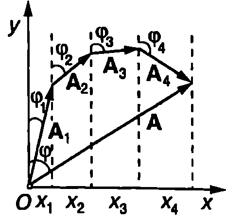
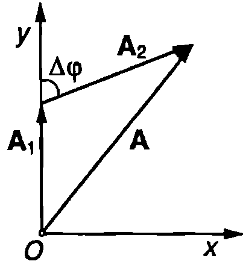
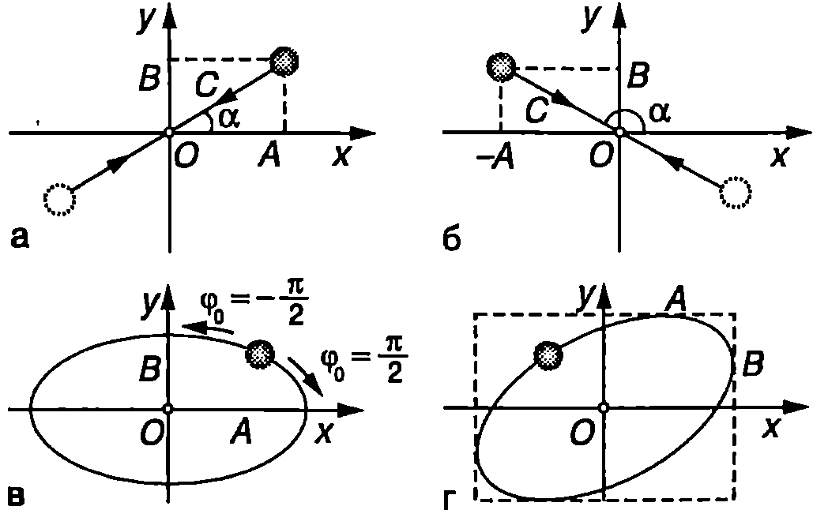

Принцип на суперпозицията
Досега разглеждахме прости хармонични трептения, които се извършват под действието само на една връщаща сила. Как ще се движи материална точка, ако при отклоняване от равновесното й положение възникват две или повече връщащи сили? Отговор на този въпрос дава принципът на суперпозицията на трептенията: Ако на една материална точка действат няколко връщащи сили, тя извършва едновременно толкова хармонични трептения, колкото е броят на връщащите сили. Всяко трептене е независимо от останалите - извършва се под действие на определена сила, така както би се извършвало, ако останалите сили не действаха.
Ще отбележим, че принципът на суперпозицията е следствие от линейност та на диференциалното уравнение \eqref{eq:70.3}, което описва хармоничното трептене. В него променливата и нейната втора производна влизат на първа степен. Ако трептенето е анхармонично, т.е. ако връщащата сила съдържа членове, пропорционални на , и т.н., уравнението, описващо такова трептене, не е линейно и принципът на суперпозицията престава да е в сила. Това означава, че две нелинейни (анхармонични) трептения не са независими, а взаимно си влияят. По-нататък ще разглеждаме само хармонични трептения, които в общия случай могат да са с различни честоти, посоки, амплитуди и начални фази. При тяхното наслагване се получава сложно движение. Ще се спрем само на трите най-прости частни случая, които най-често се срещат в различни области на физиката:
-
Събиране на трептения с еднаква честота и направление.
-
Събиране на две трептения с еднакво направление и близки честоти.
-
Събиране на две взаимно перпендикулярни трептения с еднакви честоти.
**Векторни диаграми **
Материална точка извършва в направление на оста едновременно две прости хармонични трептения с еднаква кръгова честота : В общия случай амплитудите и началните фази са различни. Съгласно с принципа на суперпозицията отклонението на материалната точка от равновесното й положение в произволен момент от времето е
Съществува прост геометричен метод за нагледно представяне на хармоничните трептения чрез вектори, наречен метод на векторните диаграми. Този метод е особено полезен, когато се налага събиране на хармонични трептения, защото заменя трудоемкото събиране на тригонометрични функции с нагледното геометрично събиране на вектори. Всяко хармонично трептене се представя чрез вектор с модул , равен на амплитудата на трептене, който се върти около началото на координатната система с постоянна ъглова скорост, равна на кръговата честота на трептене (Фиг. \ref{fig:72.1}а). В даден момент векторът сключва с оста ъгъл , равен на моментната стойност на фазата на трептене . Проекцията на вектора върху оста е т.е. тя се изменя с течение на времето по същия закон, както отклонението при хармоничното трептене: казваме, че проекцията на вектора извършва хармонично трептене.
\begin{figure}[h!]
\centering
 \caption{}
\label{fig:72.1}
\end{figure}
\caption{}
\label{fig:72.1}
\end{figure}
Нека материалната точка извършва едновременно двете хармонични трептения, зададени аналитично с уравнение \eqref{eq:72.1}. На векторната диаграма построяваме вектор с начало в началото на координатната система, който сключва ъгъл с оста (Фиг. \ref{fig:72.1}б). От края на вектора построяваме втори вектор , сключващ ъгъл оста . Така двете трептения са представени с вектори, чиито модули и са равни на амплитудите на трептене. Двата вектора се въртят с еднаква ъглова скорост около началото , която е равна на кръговата честота на трептене. Поради това ъгълът между тях не се променя с течение на времето. Той е равен на разликата в началните фази на двете трептения: Следователно сумата от двата вектора е вектор с постоянен модул, който се върти със същата ъглова скорост . От Фиг. \ref{fig:72.1}б се вижда, че проекцията на вектора върху оста се изразява с уравнение \eqref{eq:72.1}. Оттук следва изводът, че сумата от две хармонични трептения с еднакви кръгови честоти , които се извършват в едно и също направление, е хармонично трептене със същата кръгова честота . На векторната диаграма това резултантно трептене се представя с вектор , равен на геометричната сума от векторите, изразяващи отделните трептения. Фазата на резултантното трептене е равна на ъгъла , който векторът сключва с оста . Амплитудата на трептене е равна на модула на вектора и може да се определи от триъгълника, образуван от трите вектора (Фиг. \ref{fig:72.1}б) — например с помощта на косинусовата теорема.
По метода на векторните диаграми могат да се събират не само две, но и произволен брой трептения. За целта от края на вектора се построява вектор , изразяващ третото трептене и т.н. (Фиг. \ref{fig:72.2}). Векторът , който свързва началото на координатната система с края на тази начупена линия, изразява резултантното трептене. Проекцията на вектора върху координатната ос е равна на отклонението на материалната точка от равновесното и положение: \begin{figure}[h!] \centering  \caption{} \label{fig:72.2} \end{figure}
Модулът на вектора и ъгълът , който векторът сключва с оста , са равни съответно на амплитудата и на фазата на резултантното трептене.
Пример 72.1
Материална точка извършва в направление на оста едновременно две хармонични трептения с еднаква кръгова честота . Определете амплитудата на резултантното трептене. Амплитудите на двете трептения са и , а разликата в началните им фази е . При каква стойност на амплитудата на резултантното трептене е:
а) максимална; б) минимална? \end{psexample}
Решение
На векторната диаграма всички вектори се въртят около началото на координатната система с постоянна ъглова скорост. За нагледност на чертежа и за опростяване на пресмятанията е удобно да се избере такъв момент от времето , в който един от векторите е насочен по някоя от координатните оси. В случая можем да изберем момента така, че векторът , изразяващ първото от двете хармонични трептения на материалната точка, да е насочен по оста (Фиг. \ref{fig:72.3}). Тогава в момента векторът , изразяващ второто трептене, сключва ъгъл с оста . Резултантното движение (трептене) на материалната точка се представя с вектора . Прилагаме косинусовата теорема за триъгълника, образуван от трите вектора,
\begin{figure}[h!] \centering  \caption{} \label{fig:72.3} \end{figure}
откъдето определяме амплитудата на резултантното трептене:
а) Амплитудата на трептене е максимална при , т.е. при до , където и т.н. Тогава - двете трептения се извършват във фаза (синфазни трептения) и амплитудите им се събират.
- Амплитудата е минимална при , т.е. при , където и т.н. Тогава — двете трептения се извършват в амплитудите им се изваждат.
Биене
Ще разгледаме движението на материална точка, която извършва едновременно в едно и също направление две хармонични трептения с близки по големина кръгови честоти, съответно равни на и при което Ще покажем, че резултантното движение може да се разглежда като хармонично трептене с пулсираща амплитуда, наречено биене. За да опростим пресмятанията, ще се ограничим с частния случай, когато двете трептения имат еднакви амплитуди и начални фази. В този случай началният момент може да се избере така, че началните фази да са равни на нула: Тогава
С помощта на тригонометричното тъждество преобразуваме уравнение \eqref{eq:72.2} и получаваме
където в аргумента на функцията сме пренебрегнали члена който е много по-малък от . Тъй като , функцията се изменя много по-бавно от функцията . Затова движението, което се описва от уравнение \eqref{eq:72.3}, може да разглеждаме като хармонично трептене c кръгова честота и пулсираща амплитуда
\begin{figure}[h!]
\centering
 \caption{}
\label{fig:72.4}
\end{figure}
която се изменя с течение на времето също по хармоничен закон, но много по-бавно: за времето на един цикъл на трептене с кръгова честота изменението на амплитудата е много малко. На Фиг. \ref{fig:72.4} са показани графиките на функциите и при биене. Времето между два последователни максимума (минимума) на амплитудата се нарича период на биене Периодът на биене се определя от уравнение \eqref{eq:72.4}:
\caption{}
\label{fig:72.4}
\end{figure}
която се изменя с течение на времето също по хармоничен закон, но много по-бавно: за времето на един цикъл на трептене с кръгова честота изменението на амплитудата е много малко. На Фиг. \ref{fig:72.4} са показани графиките на функциите и при биене. Времето между два последователни максимума (минимума) на амплитудата се нарича период на биене Периодът на биене се определя от уравнение \eqref{eq:72.4}:
Разликата в кръговите честоти на двете трептения се нарича кръгова честота на биене.
Биене може да се демонстрира с два камертона. Когато разликата в честотите, с които трептят камертоните, е голяма, ухото и мозъкът възприемат камертоните като два независими източника на звук с различна височина на тона. Когато обаче разликата в честотите е много малка ( Hz) ухото вече не възприема техния звук като два отделни тона, а само като един тон с пулсираща амплитуда. Чува се биене — звукът периодично се усилва и затихва.
Събиране на две трептения с еднакви честоти, извършващи се във взаимно перпендикулярни направления
Материална точка извършва едновременно две хармонични трептения с еднакви честоти във взаимно перпендикулярни направления: по оста и по оста на правоъгълна координатна система, чието начало О съвпада с равновесното положение на материалната точка. Избираме началния момент така, че началната фаза на едното трептене да е нула. Тогава
където и са амплитудите на двете трептения, а фазовата разлика между тях. Ще разгледаме два характерни случая:
- Двете трептения са във фаза () или в противофаза (). При уравнения \eqref{eq:72.6} имат вида Изключваме и получаваме уравнението на траекторията
което е уравнение на права линия. Материалната точка извършва хармонично трептене с кръгова честота и амплитуда в направление, което сключва ъгъл с оста (Фиг. \ref{fig:72.5}а). На Фиг. \ref{fig:72.5}б е показан аналогичният случай за Следователно, ако материална точка извършва едновременно две хармонични трептения във взаимно перпендикулярни направления с еднаква кръгова честота , които са във фаза () или в противофаза () , резултантното движение също е хармонично трептене с кръгова честота . То се извършва в направление, определено от отношението на амплитудите на двете трептения.
Вярно е и обратното твърдение: всяко хармонично трептене може да се представи като сума от две хармонични трептения със същата кръгова честота, които са във фаза или в противофаза и се извършват в две взаимно перпендикулярни направления.
- Между двете трептения има фазова разлика Тогава
Вдигаме на квадрат двете страни на тези уравнения и ги събираме. Получаваме
Това е уравнение на елипса, чиито полуоси са равни на амплитудите и на двете трептения, т.е. в този случай материалната точка се движи по елипса. Осите на елипсата лежат върху координатните оси и (Фиг. \ref{fig:72.5}в). Когато , материалната точка се движи по посока на часовата стрелка, а при — в противоположната посока едно завъртане е равно на периода на трептене. Когато двете трептения имат еднакви амплитуди , елипсата преминава в окръжност.
Следователно равномерното движение по окръжност може да се разглежда като сума от две хармонични трептения с еднаква кръгова честота , равна на ъгловата скорост на въртене. Трептенията се извършват в две взаимно перпендикулярни направления, имат еднакви амплитуди, равни на радиуса на окръжността, и фазова разлика .
При произволна фазова разлика между двете трептения траекторията на материалната точка също е елипса. В общия случай обаче осите на тази елипса не лежат върху координатните оси, в направление на които се извършват двете хармонични трептения (Фиг. \ref{fig:72.5}г).
\begin{figure}[h!] \centering  \caption{} \label{fig:72.5} \end{figure}